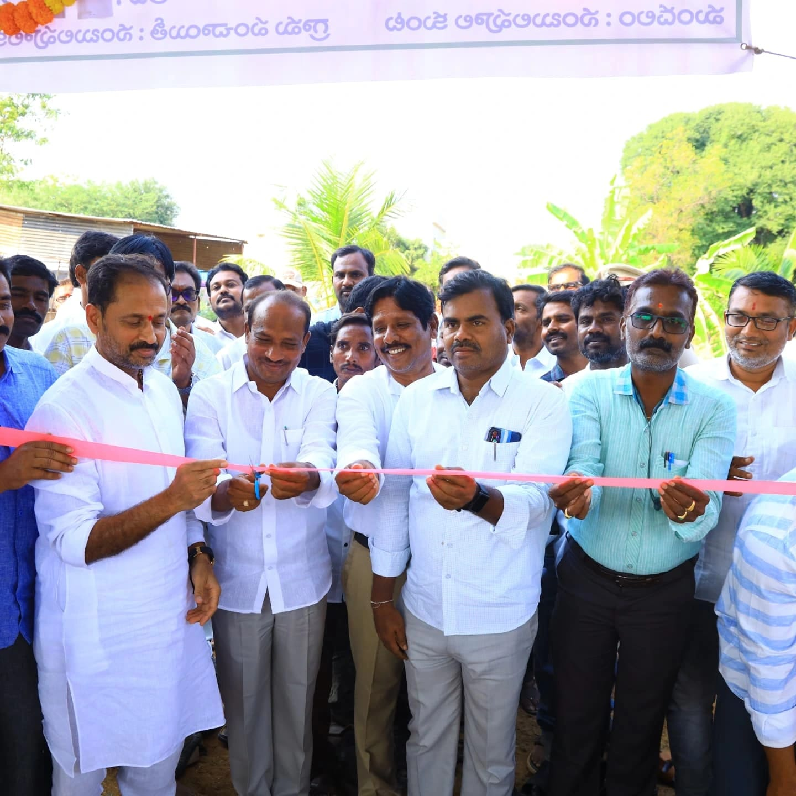
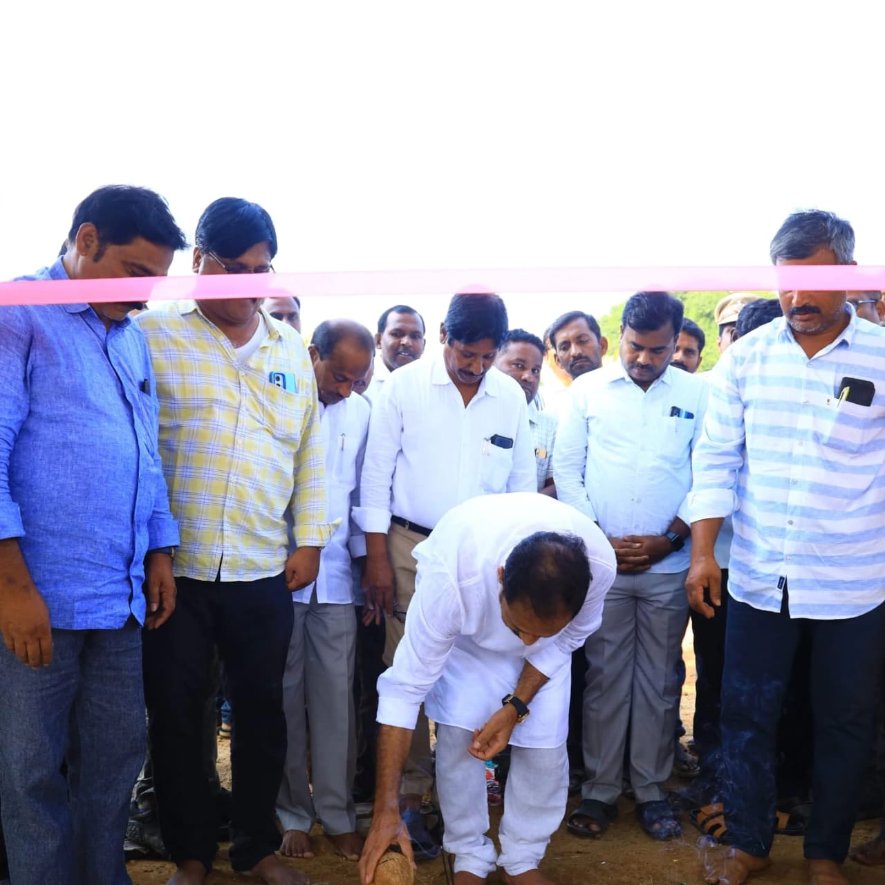

21 February
నంబులపూలకుంటలో గోకులం షెడ్ ప్రారంభోత్సవం – గ్రామాభివృద్ధికి మరొక ముందడుగు
నంబులపూలకుంట గ్రామ పంచాయితీ పరిధిలోని నంబులపూలకుంట గ్రామంలో, మహాత్మా గాంధీ జాతీయ గ్రామీణ ఉపాధి హామీ పథకం (MGNREGS) కింద నిర్మించబడిన గోకులం షెడ్ను అధికారికంగా ప్రారంభించిన కదిరి నియోజకవర్గ శాసనసభ్యులు గౌరవనీయులు శ్రీ కందికుంట వెంకటప్రసాద్ గారు.
ఈ కార్యక్రమంలో గ్రామ ప్రజలు, అధికారులు, ఇతర ప్రజాప్రతినిధులు హాజరై, ఉపాధి హామీ పథకం కింద జరుగుతున్న అభివృద్ధి కార్యక్రమాలను ప్రశంసించారు. గ్రామీణ ప్రాంతాల్లో వ్యవసాయ సంబంధిత పనులకు సహకారం అందించేందుకు, పశువుల సంరక్షణను మెరుగుపరిచేందుకు గోకులం షెడ్లు ఎంతో ఉపయోగకరమని ఎమ్మెల్యే గారు వివరించారు
ప్రభుత్వం అమలు చేస్తున్న ఉపాధి హామీ పథకం ద్వారా గ్రామీణ నిరుద్యోగులకు ఉపాధి అవకాశాలు లభిస్తున్నాయని, తద్వారా గ్రామీణ ఆర్థిక వ్యవస్థను బలోపేతం చేయడం లక్ష్యమని ఆయన పేర్కొన్నారు. ఈ కార్యక్రమం ద్వారా స్థానిక ప్రజలకు ఉపాధి మాత్రమే కాకుండా, పశుపోషణ రంగాన్ని మరింత అభివృద్ధి చేయడానికి కూడా అవకాశం కలుగుతుందని ఆయన అన్నారు.
గ్రామ అభివృద్ధికి, రైతుల సంక్షేమానికి, పశుపోషణకు ఇటువంటి పథకాలు ఎంతో ఉపయోగపడతాయని, భవిష్యత్తులో మరిన్ని అభివృద్ధి కార్యక్రమాలను తీసుకురావడానికి కృషి చేస్తామని ఎమ్మెల్యే గారు హామీ ఇచ్చారు
